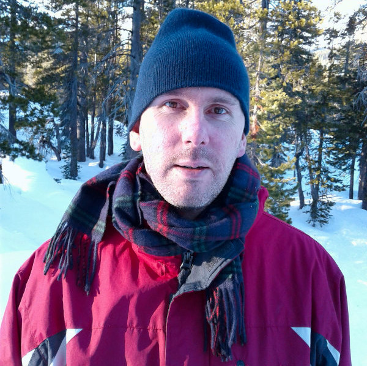

![Aluminum love from [AR]](images/fullsizeoutput_1.jpeg)
Michael Starr is the eldest son of Russian-Ukrainian parents and a zero'th-gen U.S. citizen who has lived in California his whole life. He has been writing poetry on-and-off since high school in 2004 where he was the editor of the school's literary magazine, Catharsis, and is published in the likes of Aberration Labyrinth, Lipstick Party, Anapest, Junto Magazine, and BlazeVOX. In his money-pertinent life he is a web developer and plays tennis.
